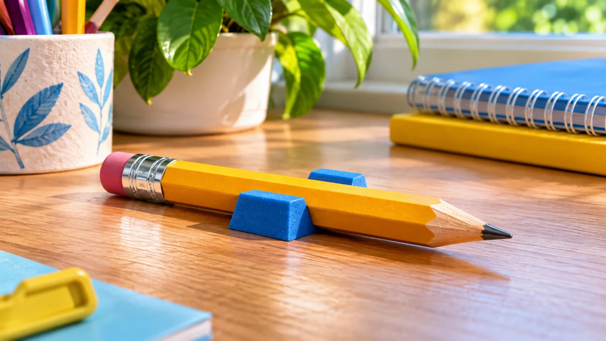

Олівець на похилій парті
Історія 9. Шукаємо приховані можливості.
🎯 Ситуація

На похилій парті лежить круглий олівець. Щойно Софійка відпускає його, він скочується на підлогу. Поряд є папір, книжка й дрібні речі з пенала.
❓ Ваше завдання
ІКР: олівець залишається на місці без постійного нагляду. Яка властивість круглої форми заважає? Що з уже наявного може виконати функцію упора?
🧩 Спробуйте!
Оберіть дві ідеї, які наближають до бажаного результату. Перетягніть картки або натисніть на них. Поясніть свій вибір.
🧺 Ваші ідеї: Поки порожньо
🧪 Маленький дослід
Перевірте дві ідеї на безпечній моделі. Спершу передбачте результат, потім порівняйте: яка ідея краще виконує потрібну функцію?
✏️ Ваш винахід
Вигадайте спосіб зупинити олівець без купівлі підставки. Назвіть ресурс, властивість і нову функцію.